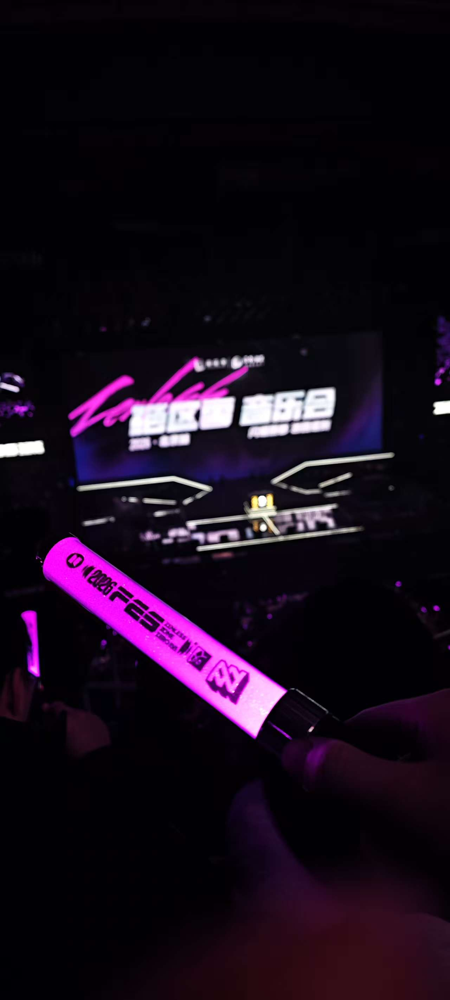

Have a little break
今天是绝区零音乐会北京第二场，早就定了票了，于是中午起床就出发了。

本来想着去音乐会前带上平板，多少学一点，但是下午小绝音乐会太多人了，旁边的咖啡馆也座无虚席，故没有学习。虽然一点无料没带，也吃到了非常多无料，感谢老师们的大力投喂。
晚上的音乐会开场打碟是挺提神的，就是老感觉大家伙积极性不太高，让一群老二次元蹦迪还是太为难了，场子直到最后才热起来，刚开场大家都放不开。
三小只中规中矩吧，没有晚上说的那么差，但确实和其他歌手肉眼可见有差距。
妮可和比利的配音意外地唱的还行哦，很不错。
金玟岐和阿兰老师分别演唱了红透晚烟青和一颗方糖悬滞的时间，都挺好的，金老师的音色在华语乐坛里也是一耳朵就能认出来。
给到雷雨心老师和黄美珍老师一个夯。
最后也最重要，给到于梓贝老师夯爆了（很大程度是我之前就超级喜欢佳音，考研上岸的bgm也用的原色，今天周边除了闪卡也全和别人换成了佳音），4首歌全部状态在线，全场观众也是在闪亮的时候终于完全被带起来了，前面总有些拘束。于老师简直是佳音人间体，暂时先这么说着，我明白二次元和三次元切割的重要性hhhhh。
lc：155
象征性刷一题力扣，已然力竭，刷牙洗脸看玩机器直播PV VS Falcons 看完睡觉，非常完美的一天。